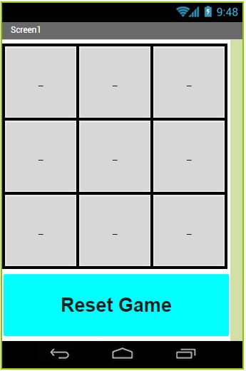

My Projects

The Slider!
Made with Scratch

The Slider is a very simple game involving a sliding square controlled by the player. However, this is no ordinary sliding-block game;
sometimes, the game will build itself to be too difficult, and in which case, the player can "reload" the level layout!
This game is still in its early stages and may continue to receive updates in the future.
"What to do?" Animation
Made with Scratch

A simple animation of a chat I had with a friend about a Computer Science assignment. Enjoy!
Tic Tac Toe! Phone application
Made with MIT App Inventor
A simple game involving the normal rules of Tac Tac Toe.
The Scarf: A computer adventure!
Made with Repl.it
A small decision-making interactive fiction about you, a gift, and a cat.